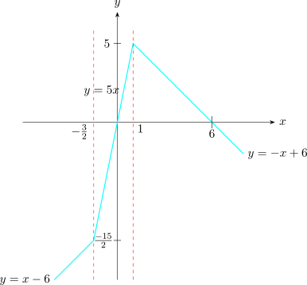
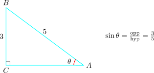

12.1 Trigonometric Functions
Consider the right angled triangle \(ABC\) below.

\[AB^2 = BC^2 + CA^2\hspace {0.5cm}\text {or}\hspace {0.5cm} c^2 = a^2 + b^2\]
The ratios of angle \(\theta \) are given as
\begin {align*} \sin \theta & = \dfrac {\text {opp}}{\text {hyp}} = \dfrac {BC}{AB} = \dfrac {a}{c}\\\\ \cos \theta & = \dfrac {\text {adj}}{\text {hyp}}= \dfrac {AC}{AB} = \dfrac {b}{a}\\\\ \tan \theta & = \dfrac {\text {opp}}{\text {adj}} = \dfrac {BC}{AC} = \dfrac {a}{b} \end {align*}
\[\text { Infact},\hspace {0.6cm}\tan \theta = \dfrac {\sin \theta }{\cos \theta }\]
Given that \(\hspace {0.2cm} \sin \theta = \dfrac {3}{5}.\hspace {0.2cm}\) Find \(\cos \theta \) and \(\tan \theta \).
Solution.
To find the required ratios in this case we use the right angled triangle to find the other side assuming that the opposite side is 3 units while the hypotenuses is 5 units.

To find \(AC\) , we have \begin {align*} AB^2 & = BC^2 + AC^2\\ \implies \hspace {0.5cm} 5^2 & = 3^2 + AC^2\\ \implies \hspace {0.5cm} AC^2 & = 25 - 9\\ \implies \hspace {0.5cm} AC & = \sqrt {16} = 4 \end {align*}
Therefore,
\(\cos \theta = \dfrac {\text {adj}}{\text {hyp}} = \dfrac {4}{5}\)
\(\tan \theta = \dfrac {\text {opp}}{\text {adj}} = \dfrac {3}{4}\)
Other ratios defined from these three are cosencant, secant and contangent.
These are defined as follows
\begin {align*} \text {cosec}\theta & = \dfrac {1}{\sin \theta }\\\\ \sec \theta & = \dfrac {1}{\cos \theta }\\\\ \cot \theta & = \dfrac {1}{\tan \theta }= \dfrac {\cos \theta }{\sin \theta } \end {align*}

\[\text {From this triangle, we have}\hspace {0.3cm}\sin \theta = \dfrac {a}{c}\hspace {0.3cm}, \hspace {0.5cm} \cos \theta = \dfrac {b}{c}\hspace {0.4cm}\text {and}\hspace {0.4cm} c^2 = a^2 + b^2\]
\begin {align*} \text {Now},\hspace {1cm} \sin ^2\theta + \cos ^2\theta & = \big (\sin \theta \big )^2 + \big (\cos \theta \big )^2\\\\ & = \Big (\dfrac {a}{c}\Big )^2 + \Big (\dfrac {b}{c}\Big )^2\\\\ & = \dfrac {a^2}{c^2} + \dfrac {b^2}{c^2}\\\\ & = \dfrac {a^2 + b^2}{c^2}\\\\ & = \dfrac {c^2}{c^2}\\\\ \implies \hspace {0.4cm} \sin ^2\theta + \cos ^2\theta & = 1 \end {align*}
Thus for any angle \(\theta \)
\(*\hspace {0.3cm}\sin ^2\theta + \cos ^2\theta = 1\)
Proof.
\begin {align*} \text {L.H.S}\hspace {1cm} \sec ^2 \theta & = \big (\sec \theta \big )^2 = \Big (\dfrac {1}{\cos \theta }\Big )^2\\\\ & = \dfrac {1}{\cos ^2\theta }\\\\ & = \dfrac {\cos ^2\theta + \sin ^2\theta }{\cos ^2\theta }\\\\ & = \dfrac {\cos ^2\theta }{\cos ^2\theta } + \frac {\sin ^2\theta }{\cos ^2\theta }\\\\ & = 1 + \tan ^2\theta = \text {R.H.S}\\ \end {align*}
\begin {align*} \text {R.H.S}\hspace {1cm} 1 + \tan ^2\theta & = 1 + \dfrac {\sin ^2\theta }{\cos ^2\theta }\\\\ & = \dfrac {\cos ^2\theta + \sin ^2\theta }{\cos ^2\theta }\\\\ & = \dfrac {1}{\cos ^2\theta }\\\\ & = \sec ^2\theta = \text {L.H.S}\\ \end {align*} □
Prove that \(\hspace {0.5cm} \big ( 1 - \cos A\big )\big (1 + \sec A\big ) = \sin A \tan A\)
Proof.
\begin {align*} \text {L.H.S}\hspace {1cm} (1 - \cos A)(1 + \sec A) & = 1 (1 + \sec A) - \cos A (1 + \sec A)\\ & = 1 + \sec A - \cos A - \cos A\sec A\\ & = 1 + \dfrac {1}{\cos A} - \cos A - \cos A\Big (\dfrac {1}{\cos A}\Big )\\ & = 1 + \dfrac {1}{\cos A} - \cos A - 1\\\\ & = \dfrac {1}{\cos A}-\cos A\\\\ & = \dfrac {1 - \cos ^2 A}{\cos A}\hspace {2cm} \sin ^A = 1 - \cos ^2A\\\\ & = \dfrac {\sin ^2A}{\cos A}\\\\ & = \sin A\hspace {0.1cm}\dfrac {\sin A}{\cos A}\\\\ & = \sin A \tan A = \text {R.H.S}\\\\ \end {align*}
Let \(A\) and \(B\) be two angles. Then
- \(*\)
- \(\hspace {0.3cm}\sin (A + B) = \sin A \cos B + \cos A \sin B\)
In particular if \(A = B\)
- \(*\)
- \(\hspace {0.3cm} \sin (2A) = \sin (A+ A) = \sin A \cos A + \cos A \sin A\)
\(\therefore \hspace {0.5cm} \sin 2A = 2\sin A \cos A\)
Also
- \(*\)
- \(\hspace {0.3cm}\sin (A - B) = \sin A \cos B - \sin B \cos A\)
Similarly
- \(*\)
- \(\hspace {0.3cm} \cos (A + B) = \cos A \cos B - \sin A \sin B\)
In particular if \(A=B\) then
- \(*\)
- \(\hspace {0.3cm} \cos 2A = \cos (A + A) = \cos A \cos A - \sin A \sin A\)
i.e \(\cos 2A = \cos ^2A - \sin ^2 A\)
Also
- \(*\)
- \(\hspace {0.3cm} \cos ( A - B) = \cos A\cos B + \sin A \sin B\)
Proof.
Note that \(\hspace {0.2cm} \cos 2\theta \hspace {0.2cm}\) and \(\hspace {0.2cm}\cos ^2\theta \hspace {0.2cm}\) are connected by the formula
\[\cos 2\theta = \cos ^2\theta - \sin ^2\theta \]
But \(\hspace {0.2cm}\sin ^2\theta \hspace {0.2cm}\) doesn’t appear in the given identity. Therefore we must eliminate it.
i.e \(\cos 2\theta = \cos ^2\theta - \sin ^2\theta \hspace {0.2cm}\) But \(\hspace {0.2cm}\sin ^2\theta = 1 - \cos ^2\theta \). Thus \begin {align*} \cos 2\theta & = \cos ^2\theta - ( 1 - \cos ^2\theta )\\ & = \cos ^2\theta - 1 + \cos ^2\theta \\ & = 2\cos ^2\theta - 1 \end {align*}
\[\implies \hspace {0.4cm} \cos 2\theta + 1 = 2\cos ^2\theta \]
\[\implies \hspace {0.4cm} \dfrac {\cos 2\theta + 1}{2} = \cos ^2\theta \] □
Example 12.5. Prove the following identities \(\displaystyle {\tan (A+B) = \dfrac {\tan A + \tan B}{1 - \tan A\tan B}}\)
Proof. \[\text {L.H.S}\hspace {0.5cm}\tan (A + B) = \dfrac {\sin (A+ B)}{\cos (A + B)} = \dfrac {\sin A\cos B + \sin B \cos A}{\cos A \cos B - \sin A \sin B}\]
Divide both the numerator and the denominator by \(\hspace {0.3cm} \cos A \cos B\hspace {0.1cm}.\hspace {0.2cm}\) Then
\begin {align*} \tan (A + B) & = \dfrac {\dfrac {\sin A \cos B}{\cos A\cos B} + \dfrac {\sin B\cos A}{\cos A\cos B}}{\dfrac {\cos A \cos B}{\cos A\cos B} - \dfrac {\sin A\sin B}{\cos A\cos B}}\\\\ & = \frac {\dfrac {\sin A}{\cos A} + \dfrac {\sin B}{\cos B}}{1 - \dfrac {\sin A}{\cos A}\cdot \dfrac {\sin B}{\cos B}}\\\\ & = \frac {\tan A + \tan B}{1 - \tan A \tan B}\\\\ \end {align*} □
Example 12.6. Prove the following identities \(\hspace {0.2cm}\displaystyle {\sin 2 x = \dfrac {2\tan x}{1 + \tan ^2 x}}\)
Proof. \begin {align*} \text {L.H.S},\hspace {1cm} \sin 2 x & = \dfrac {\sin 2x}{1}\\\\ & = \dfrac {2\sin x \cos x}{1}\\\\ & = \dfrac {2\sin x \cos x}{\cos ^2x + \sin ^2x} \end {align*}
Divide both the numerator and the denominator by \(\hspace {0.2cm} \cos ^2x\hspace {0.1cm}.\hspace {0.2cm}\) Then \begin {align*} \sin 2x & = \dfrac {\dfrac {2\sin x \cos x}{\cos ^2x}}{1 + \dfrac {\sin ^2x}{\cos ^2x}}\\\\ & = \dfrac {\dfrac {2\sin x}{\cos x}}{1 + \Big (\dfrac {\sin x}{\cos x}\Big )^2}\\\\ & = \dfrac {2\tan x }{1 + \tan ^2x} = \text {R.H.S}\\\\ \end {align*} □
Task
Prove
- 1.
- \(\hspace {0.4cm}\) cosec\(^2x = 1 + \cot ^2 x \)
- 2.
- \(\hspace {0.4cm} \sin ^2x = \dfrac {1 - \cos ^2x}{2}\)
- 3.
- \(\hspace {0.4cm} \tan (A - B) = \dfrac {\tan A - \tan B}{1 + \tan A \tan B}\)
- 4.
- \(\hspace {0.4cm} \cos 2x = \dfrac {1 - \tan ^2 x}{1 + \tan ^2x}\)
Questions on this section
Stuck on something here? Ask below and it stays attached to this topic.